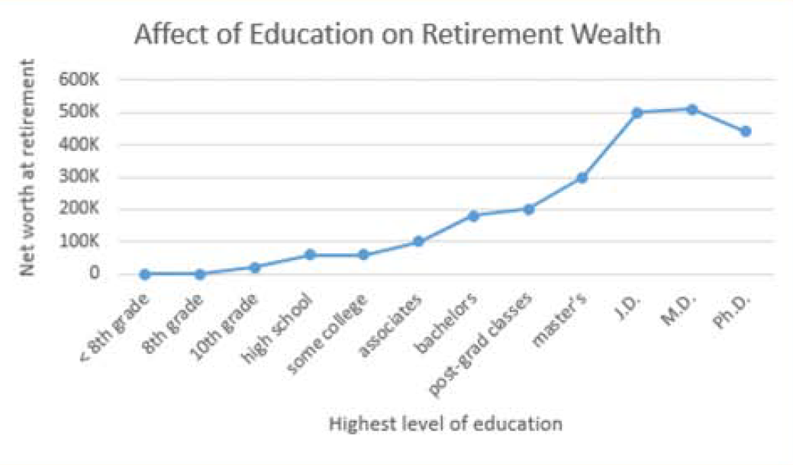
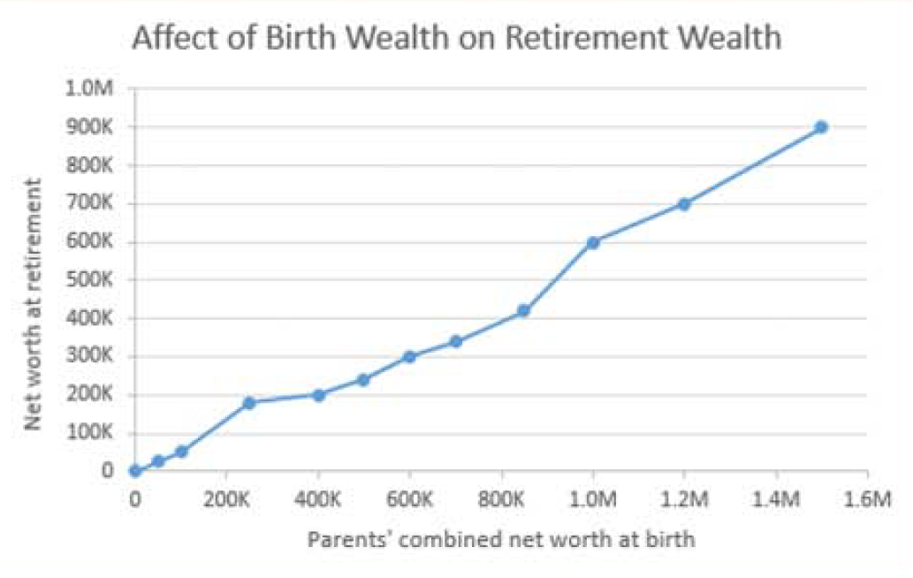

Maybe so, but work alone might not cut it. The Following graphs
[1]
show various paths to prosperity.
Education
More advanced schooling helps. If you can avoid the crushing debt of
student loans, all the better. Try to find a major that you're good at
and that is good to you.

Birthright
For accruing wealth, what's even better than education? Being born
wealthy. in the graphj below, note how the birthright high enders are
able to become more wealthy than the education high enders. So before
being born, shop around.
